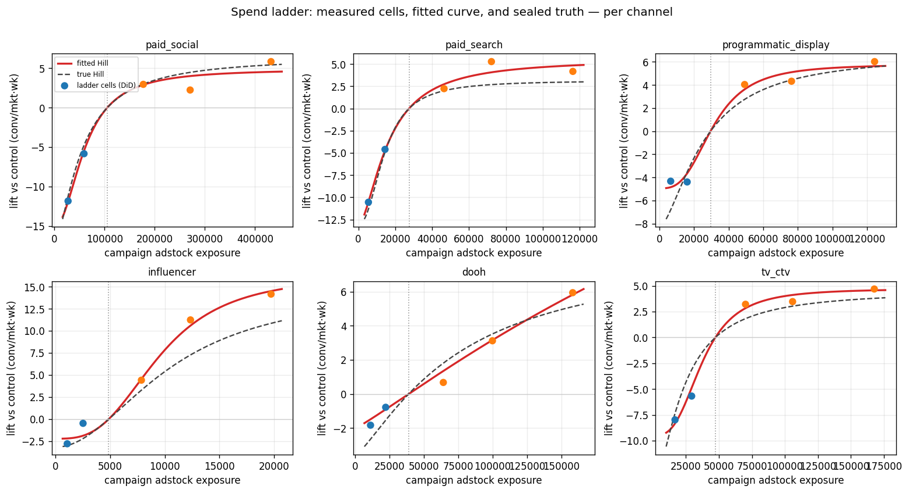

1 · The ladder recovers the curve

Each panel: blue points = pull-DOWN cells, orange = push-UP cells, dotted line = current operating point. The down cells pin the curve's absolute level; the up cells expose diminishing returns. Reading the contribution at the operating point becomes an interpolation, not the extrapolation a single always-up test is forced into.
2 · Did it crack the saturated channels?
| channel | true saturation | true contrib | ladder est | error | 89% CI (✓=covers truth) |
|---|---|---|---|---|---|
| paid_social | 70% (saturated) | 282 | 244 | -38 | ✓ [197,549] |
| paid_search | 72% (saturated) | 194 | 214 | +20 | ✓ [161,356] |
| programmatic_display | 52% (mid) | 130 | 77 | -53 | ✗ [56,105] |
| influencer | 15% (headroom) | 46 | 29 | -17 | ✓ [24,51] |
| dooh | 30% (headroom) | 60 | 32 | -28 | ✓ [6,112] |
| tv_ctv | 71% (saturated) | 229 | 150 | -79 | ✗ [121,192] |
Ladder recovery: MAE 39 conv/wk per channel, 4/6 credible intervals cover truth. The headline: the saturated channels (paid_social, paid_search, tv_ctv) — the ones a single-cell anchor pushed to nonsense (paid_social went to ~20 vs a true 282) — are now right-sized, because the bracketing cells let the fit see the curvature instead of guessing it. tv_ctv stays the hardest: its long carryover (θ=0.75) muddies the in-campaign exposure and its lift is small, so even a ladder leaves it under-credited. Measuring beats assuming — but saturation is still the enemy.
3 · What a ladder actually costs
None of the cost is the modeling. It is calendar time, scarce geo inventory, and a real media tax — scaled here to a ~$300M annual program (each channel's budget = its share of observed spend):
| channel | annual budget | test DMAs | geo feasibility | duration | media tax ($) | tax % of budget |
|---|---|---|---|---|---|---|
| paid_social | $102M | 240 | SHORT 30 DMAs | 5.1 mo | $4.03M | 3.9% |
| paid_search | $53M | 240 | SHORT 30 DMAs | 5.1 mo | $2.08M | 3.9% |
| programmatic_display | $38M | 240 | SHORT 30 DMAs | 5.1 mo | $1.48M | 3.9% |
| influencer | $21M | 240 | SHORT 30 DMAs | 5.1 mo | $0.82M | 3.9% |
| dooh | $20M | 240 | SHORT 30 DMAs | 5.1 mo | $0.80M | 3.9% |
| tv_ctv | $67M | 240 | SHORT 30 DMAs | 5.1 mo | $2.64M | 3.9% |
- Calendar. Each ladder = pre-period + campaign + carryover read ≈ a full quarter (~5 months, longer-carryover channels read slower). Cells run in parallel as separate market groups, so one channel's ladder is one wave — but the rotating program tests one channel per quarter, so laddering all six is a ~1.5-year commitment back-to-back, longer in practice.
- Geo inventory. A 6-cell × 40-market ladder ties up 240 test DMAs at once — more than the ~210 DMAs that exist in the US. Real programs cap test geos to protect the national number, so cells get smaller and noisier, or you drop to sub-DMA matched markets. And the saturated channels — smallest lift, hardest to detect — need the most markets to power, exactly where geo is scarcest.
- Media tax. The up-cells pour money into the flat part of the curve (near-zero marginal return) and the down-cells forgo conversions. Across the portfolio that is on the order of $12M of deliberately sub-optimal spend per ladder wave — paid to learn the curve. The payoff has to clear that bar.